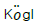
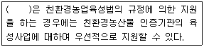
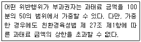

유기농업기사 (2012-03-04 기출문제)
1과목: 재배원론
1. 화학적⋅생리적으로 염기성 비료에 속하는 것은?
- (NH4)2SO4
- 용성인비
- CO(NH2)2
- K2SO4
(정답률: 75%)

2. 감자의 위축병을 매개하는 해충은?
- 선충
- 진딧물
- 명나방
- 응애류
(정답률: 79%)
3. 파이토크롬(phytochrome)의 설명으로 틀린 것은?
- 광흡수색소로서 일장효과에 관여한다.
- Pr은 호광성종자의 발아를 억제한다.
- 파이토크롬은 적색광과 근적외광을 가역적으로 흡수할 수 있다.
- 굴광현상을 나타내는 호르몬의 일종으로 식물 생육에 필수적인 물질이다.
(정답률: 75%)
4. 관리가 편리하고 통풍, 통광이 양호하나 결과(結果)수가 적어지는 결점이 있는 정지법은?
- 원추형
- 변칙주간형
- 배상형
- 울타리형
(정답률: 57%)
5. 논의 담수관개 효과로 거리가 먼 것은?
- 온도의 조절 작용
- 풍식의 방지와 재식밀도 조절
- 생리적으로 필요한 수분의 공급
- 유해물질의 제거와 잡초발생의 억제
(정답률: 81%)
6. 종자가 발아력을 보유하고 있는 기간을 종자의 수명이라 한다. 다음 중 벼, 보리, 밀이 속하는 것은?
- 단명종자(短命種子)
- 상명종자(常命種子)
- 장명종자(長命種子)
- 영명종자(永命種子)
(정답률: 60%)
7. 토양이 과습할 때 생성되는 황화수소(H2S)에 의한 호흡억제 과정을 무엇이라 하는가?
- 전자전달과정
- 해당과정
- Acetyl CoA 형성과정
- TCA회로
(정답률: 50%)
8. 목초의 하고 원인에 대한 설명으로 옳은 것은?
- 한지형 목초는 고온에서 생육이 왕성하여 하고현상이 덜하다.
- 한지형 목초는 요수량이 작아 건조에 견디는 힘이 적어서 하고가 심하다.
- 월동목초는 대부분 장일식물이며 초여름의 장일조건에 의해서 생식생장이 촉진되어 하고현상이 조장한다.
- 고온다습한 상태는 병충해의 발생이 억제되어 하고현상이 덜하다.
(정답률: 58%)
9. 인공상토의 구성재료에 대한 설명으로 틀린 것은?
- 펄라이트나 버미큘라이트는 중성~약알카리성으로pH에 미치는 영향이 적다.
- 코코피트는 코코넛 야자열매의 껍질섬유를 가공한 것이다.
- 펄라이트는 양이온교환용량이 작고 완충능력이 낮다.
- 피트모스는 중성이며 pH에 미치는 영향이 적다.
(정답률: 53%)
10. 기체성 식물호르몬인 것은?
- cytokinin
- auxin
- gibberellin
- ethylene
(정답률: 76%)
11. 작물의 내적 균형 지표로 활용할 수 없는 것은?
- C/N 율
- T/R 율
- G-D 균형
- GDD
(정답률: 71%)
12. 담수표면직파에서 종자에 과산화석회를 분의하여 파종하는 가장 큰 목적은?
- 종자에 산소공급
- 종자의 무게증대
- 조류의 피해방지
- 종자에 보온효과
(정답률: 79%)
13. 식물체의 정아우세현상을 발현하는 식물호르몬은?
- auxin
- gibberellin
- cytokinin
- abscissic acid
(정답률: 63%)
14. 두류에서 도복의 위험이 가장 큰 시기는?
- 개화기로부터 약 10일간
- 개화기로부터 약 20일간
- 개화기로부터 약 30일간
- 개화기로부터 약 40일간
(정답률: 58%)
15. 작물의 내동성 중대요인이 아닌 것은?
- 원형질 단백질에 –SH(thiol)기가 많아야 한다.
- 지유함량이 높아야 한다.
- 당분함량이 높아야 한다.
- 전분함량이 높아야 한다.
(정답률: 68%)
16. 벼의 여러 가지 기상 생태형 중에서 저위도 지대에 분포하는 품종의 생태형은?
- 기본 영양생장성과 감온성이 작고 감광성이 큰 감광형
- 기본 영양생장성과 감광성이 작고, 감온성이 큰 감온형
- 감온성과 감광성이 작고 기본 영양생장성이 큰 기본 영양생장형
- 감광성이 작고 감온성과 기본 영양생장성이 큰 감온⋅기본 영양생장형
(정답률: 50%)
17. 벼 도정시 정곡환산율은 중량과 용량으로 각각 몇 %인가?
- 42%, 80%
- 52%, 70%
- 62%, 60%
- 72%, 50%
(정답률: 50%)
18. 학자와 관련 업적이 서로 잘못 짝지어진 것은?
- Liebig - 무기영양설
- J. De Vries - 돌연변이설

– GA 발견- J.W. Cornforth – ABA 발견
(정답률: 65%)
19. 버널리제이션(春化處理)에 대한 설명으로 옳은 것은?
- 추파성 정도가 높은 식물일수록 장기 저온처리를 해야 효과가 있다.
- 버널리제이션에 감응하는 부위는 잎이다.
- 버널리제이션에 산소의 공급은 필요하지 않다.
- 최아한 봄밀(春播麥類)을 1~2℃에서 저온처리했을 때 개화촉진 효과가 나타나는 것을 말 한다.
(정답률: 48%)
20. 맥류 재배에서 바람에 의한 도복방지책으로 가장 알맞은 것은?
- 배토(培土)
- 지주(支柱)
- 결속(結束)
- 복토(覆土)
(정답률: 50%)
2과목: 토양비옥도 및 관리
21. 토양의 경운에 대한 설명으로 틀린 것은?
- 무경운은 경운하지 않고 종자만 파종하여 농사짓는 것이다.
- 국지경운은 제초하고 종자 심을 곳만 얕게 갈아주는 것이다.
- 천경은 경반층을 부수어 주는 경운이다.
- 심경은 작토층 확대를 목적으로 깊게 갈아주는 경운이다.
(정답률: 73%)
22. 논 토양의 질산(NO3-)이 환원층에서는 주로 어떻게 변화하는가?
- pH값에 따라 산화 또는 환원된다.
- 토양입자에 흡착된다.
- 환원되어 질소가스(N2)로 휘산한다.
- 환원되어 암모늄(NH4+)으로 된다.
(정답률: 43%)
23. 토양의 양이온 치환용량이 20cmolc/kg이고 Ca의 포화도가 40%라 한다. 이 토양 100g 중에 함유된 치 환성 Ca은 몇 mg인가? (단, Ca 1meq은 20mg 이다.)
- 40mg
- 20mg
- 80mg
- 160mg
(정답률: 17%)
24. 시설재배지 토양에서 나타날 수 있는 문제점과 가장 거리가 먼 것은?
- 염류 집적
- 연작 장해
- 양분의 용탈
- 양분의 불균형
(정답률: 72%)
25. 다음 중 질소질 비료인 요소(urea)에 대한 설명으로 잘못된 것은?
- 분자식은 CO(NH2)2 이다.
- 46%의 질소를 함유하고 있다.
- 보통 무색의 주상 결정이다.
- 조해성이 적다.
(정답률: 64%)
26. 유기물의 분해와 부식의 생성은 온도와 습기의 영향을 크게 받는다. 다음 중 유기물의 집적이 가장 많이 일어날 수 있는 조건은?
- 50℃의 기온, 낮은 습도유지
- 35℃의 기온, 낮은 습도유지
- 0℃의 기온, 높은 습도유지
- 25℃의 기온, 높은 습도유지
(정답률: 64%)
27. 다음의 석회물질 100g을 토양에 처리하였을 때 토양이 산성 중화력이 가장 큰 것은?(단, 석회물질의 입경크기는 모두 같은 것으로 한다.)
- 소석회
- 생석회
- 탄산석회
- 황산석회
(정답률: 48%)
28. 공극을 포함한 토양 시료의 전체 부피는 500 cm3이고, 말리기 전 물을 포함한 무게는 850g 이며 건조 후의 무게는 700g 이었다. 이 토양 시료의 공극 부피가 250cm3 이면 용적밀도는 얼마인가?
- 3.40 g/cm3
- 2.80 g/cm3
- 1.70 g/cm3
- 1.40 g/cm3
(정답률: 22%)
29. 토양의 소성지수를 결정하는 요인으로만 짝지어진 것은?
- 토양반응과 유기물함량
- 점토의 함량과 토양공기
- 점토의 함량과 종류
- 입단구조와 유기물함량
(정답률: 27%)
30. 토양 부식이 음전하를 띄는 것은 주로 어떤 성분 때문인가?
- 탄산기
- 아미노기
- Al 과 Si
- 카복실기와 페놀릭 OH기
(정답률: 60%)
31. 부식의 기능에 대한 설명으로 틀린 것은?
- 물을 보유하는 힘을 높여 준다.
- 중금속의 피해를 감소시킨다.
- 토양구조의 분산(分散)을 증가시킨다.
- 토양의 입단구조를 조장한다.
(정답률: 80%)
32. 토양의 구조를 분류하는 특성이 아닌 것은?
- 모양(type)
- 위치(position)
- 크기(class)
- 발달정도(grade)
(정답률: 46%)
33. 다음 중 화성암이며, 우리나라 토양의 주요 모재가 되는 암석은?
- 화강암
- 천매암
- 석회암
- 현무암
(정답률: 91%)
34. 강우시 강우량이 침투량(Infiltration)보다 많을 때 발생하는 현상으로만 연결된 것은?
- 침투(Infiltration), 유거(Runoff)
- 침투(Infiltration), 증발(Evaporation)
- 모세관 상승(Capillary Rise), 유거(Runoff)
- 유거(Runoff), 침식(Erosion)
(정답률: 67%)
35. 탄질율(C/N ratio)과 부식화의 관계를 바르게 설명한 것은?
- 탄질율이 높은 유기물일수록 토양 중에서 분해가 잘된다.
- 탄질율이 낮으면 분해될 때 질소기아현상이 유발된다.
- 탄질율이 높은 유기물은 요소를 첨가해야 분해가 잘된다.
- 유기물이 분해되어 평형상태일 때 탄질율은 약 20:1 이 된다.
(정답률: 37%)
36. 미생물의 에너지원과 영양원으로 작용하는 물질로 구성된 것은?
- 규소 – 붕소
- 탄소 – 질소
- 염소 – 인
- 비소 – 철
(정답률: 85%)
37. 다음 중 Polynov의 풍화이론에 따른 암석풍화생성 물의 가동률(可動率)이 가장 낮은 원소는?
- Cl-
- Na+
- SiO2
- Fe2O3
(정답률: 30%)
38. 암모늄태 질소를 아질산태 질소로 산화시키는데 주로 관여하는 세균은?
- Nitrobacter
- Nitrosomonas
- Nitrosococcus
- Azotobacter
(정답률: 30%)
39. 토양의 입자밀도와 용적밀도로 알 수 있는 토양의 성질은?
- 공극량
- 점토의 종류
- 공극의 크기분포
- 입상(粒狀) 등 토양구조
(정답률: 65%)
40. 다음 중 식물체의 구성성분에 있어 미생물에 의한 분해가 가장 어려운 것은?
- 셀룰로오스
- 헤미셀룰로오스
- 펙틴
- 리그닌
(정답률: 88%)
3과목: 유기농업개론
41. 다음 중 유기농업에서 토양비옥도 유지⋅증진을 위한 방법으로 가장 적합한 것은?
- 저항성 품종
- 기계적 경운
- 두과작물재배
- 화염제초
(정답률: 84%)
42. 과수원에 피복작물을 재배하고자 할 때 고려할 조건으로 가장 거리가 먼 것은?
- 종자가 저렴하고, 쉽게 구할 수 있을 것
- 생육이 빨라 단기간에 피복이 가능할 것
- 대기로부터 질소를 고정하고 이를 토양에 공급할 것
- 토양 산성화 개선에 효과적일 것
(정답률: 53%)
43. 유기농 수도작에서 고품질 품종 중 중생종에 해당되지 않은 것은?
- 화성벼
- 수라벼
- 화영벼
- 오대벼
(정답률: 56%)
44. 친환경농업육성법에 따른 유기축산물의 인증기준으로 틀린 것은?
- 유기사료를 사용
- 초지 및 야외 사유장 확보 및 배설물의 적절한 관리
- 예방을 위한 항생물질 사용
- 가축의 사양 관리기록 보존
(정답률: 91%)
45. 잡종강세에 대한 설명으로 틀린 것은?
- 잡종강세는 F3 세대에서 가장 크게 발현된다.
- 다른 계통간의 교잡을 시키면 우수한 형질이 나타난다.
- 잡종강세 식물은 외계의 불량조건에 대한 저항력이 강한 경향이 있다.
- 잡종강세 식물은 생장발육이 왕성하다.
(정답률: 72%)
46. Codex 유기식품의 생산⋅가공⋅표시 및 유통에 관한 가이드라인에서 비반추 가축은 건물을 기준으로 유기농 사료를 몇 % 이상 먹고 자라야 유기축산이라고 하는가?
- 65
- 70
- 75
- 80
(정답률: 53%)
47. 유기농산물 생산을 위한 병충해 방제법 중 경종적 제어방법으로 볼 수 없는 것은?
- 윤작
- 기생성 곤충 활용
- 생육기 조절법
- 시비법 개선
(정답률: 74%)
48. HACCP(Hazard Analysis Critical Control Point ; 위해요소 중점관리기준) 7가지 원칙 중 제 7원칙의 기록유지방법(Record-keeping procedure)에 대한 설명으로 틀린 것은?
- CCP에 대한 모든 감시기록
- 온도에 민감한 재료에 대한 보관온도 및 보관기간 기록
- 종업원 보수에 대한 기록
- 원자재 및 부자재에 대한 기록
(정답률: 88%)
49. 볍씨의 친환경 종자소독법인 온탕소독법을 설명한 것이다. 다음 중 고온장해가 적고 소독효과가 가장 높은 것은?
- 24시간 침종한 볍씨를 60℃의 온탕에서 약 10분간 침지한다.
- 24시간 침종한 볍씨를 60℃의 온탕에서 약 30분간 침지한다.
- 마른 볍씨를 60℃의 온탕에서 약 10분간 침지한다.
- 마른 볍씨를 60℃의 온탕에서 약 60분간 침지한다.
(정답률: 23%)
50. 녹비작물로 헤어리베치를 재배하는 경우 헤어리베치의 생초 2000kg에 함유되어 있는 질소량은 몇 kg인가? (단, 헤어리베치의 수분함량 85%, 건초의 질소함량 4%를 기준으로 계산)
- 6
- 8
- 10
- 12
(정답률: 32%)
51. 유기농업에서 토양양분 보존을 이룰 수 있는 작부 체계기술로 볼 수 없는 것은?
- 초기생육이 왕성한 피복작물을 재배하거나 수확후 작물잔재를 남겨 토양을 나지상태로 두는 것을 최대한 피한다.
- 짚 등의 부산물을 농장 밖으로 팔거나 내보내지 않고 그루터기와 함께 로타리 작업을 하거나 가축깔개로 사용한 후 퇴비화하여 토양에 환원시킨다.
- 두과작물과 다비성 작물을 윤작재배함으로써 후작 물의 질소요구량을 자연적으로 충족시켜 주도록 한다.
- 볏짚 등이 부산물도 소득증대를 위해 판매하여 현금화하고, 토양에는 N, P, K를 포함한 화학비료를 충분히 공급하여 토양 양분의 균형을 맞춘다.
(정답률: 75%)
52. 친환경농업에 해당되지 않는 것은?
- 녹색혁명농업
- 생명동태농업(Bio-dynamic 농업)
- IPM(Integrated Pest Management)
- 유기농업
(정답률: 48%)
53. 다음 중 타감작용이 가장 큰 작물은?
- 벼
- 옥수수
- 호밀
- 수수
(정답률: 50%)
54. 지력(地力)에 관한 설명으로 옳은 것은?
- 넓고 평탄하여 사용하기에 편리한 정도에 따라 달라진다.
- 토지 감정에 의한 가격평가에 따라 달라진다.
- 물리성, 화학성, 미생물성에 따라 그 정도가 달라진다.
- 흙의 견고성에 따라 그 정도가 달라진다.
(정답률: 81%)
55. 유기농업을 위한 품종 선택시 가장 부적합한 것은?
- 병충해 저항성이 높은 품종
- 잡초 경합력이 높은 품종
- 유기농법으로 재배되어 채종된 품종
- 종자의 화학적인 소독처리를 거친 품종
(정답률: 91%)
56. 시설원예 토양의 염류과잉집적에 의한 작물의 생육장애 문제를 해결하는 방법이 아닌 것은?
- 윤작을 한다.
- 연작 재배한다.
- 미량원소를 공급한다.
- 퇴비, 녹비 등을 적량 시용한다.
(정답률: 72%)
57. 친환경농업육성법에 따른 친환경농업 육성계획에 포함되어야 할 사항과 가장 거리가 먼 것은?
- 공공인증기관의 육성 방안
- 농업의 공익적 기능 증대 방안
- 친환경농산물의 소비촉진 방안
- 친환경농업 시범단지 육성 방안
(정답률: 50%)
58. 시설내 토양의 특성이 아닌 것은?
- 염류농도가 높다.
- 토양 pH가 매우 높다.
- 미량원소가 결핍되기 쉽다.
- 토양통기가 불량하다.
(정답률: 56%)
59. 염류농도 장해의 가시적 증상으로 옳지 않은 것은?
- 잎이 황색으로 변하기 시작한다.
- 잎 가장자리가 안으로 말리기 시작한다.
- 잎 끝이 타면서 말라 죽는다.
- 칼슘과 마그네슘 결핍증이 나타난다.
(정답률: 24%)
60. 볍씨 가리기는 대개 소금물을 이용하여 비중을 보게된다. 메벼의 경우 소금물(비중 1.13)을 만드는 방법으로 가장 적당한 것은?
- 물 18L에 소금 4.5kg을 녹인다.
- 물 18L에 소금 3.5kg을 녹인다.
- 물 18L에 소금 2.5kg을 녹인다.
- 물 18L에 소금 1.5kg을 녹인다.
(정답률: 23%)
4과목: 유기식품 가공.유통론
61. 무균충전 시스템과의 조합으로 상온 저장⋅유통이 가능하며, 고추장, 된장, 과일, 어육소시지, 어묵 등의 가공과 냉동식품의 해동에 응용이 가능한 살균방법은?
- 전기저항가열법
- 적외선조사법
- 고온살균법
- 한외여과법
(정답률: 62%)
62. 미생물의 살균에 대한 설명으로 틀린 것은?
- 사멸방법으로 주로 열처리를 이용한다.
- D값이란 일정온도에서 일군의 미생물이 90% 사멸 될때까지 걸리는 시간이다.
- Z값이란 D값을 1/10로 감소시키는데 소요되는 시간이다.
- 보툴리누스 포자를 열처리하려면 D값의 12배 만큼 처리해야 한다.
(정답률: 25%)
63. 과일이나 채소의 신선도 유지를 위한 저장 방법중 가스 치환포장방법은 공기를 주로 어떤 성분으로 바꾸어 포장하는가?
- 산소, 질소
- 산소, 일산화탄소
- 일산화탄소, 헬륨
- 질소, 이산화탄소
(정답률: 89%)
64. 가공식품에서 제외되는 단순처리에 해당하는 것은?
- 농⋅임⋅축⋅수산물 등 식품원료에 식품첨가물을 가하여 만든 식품
- 농⋅임⋅축⋅수산물 등 식품원료의 형태를 알아 볼 수 없도록 변형(분쇄, 절단 등)하여 만든 식품
- 농⋅임⋅축⋅수산물 등 식품원료의 형태를 변형시킨 식품을 서로 혼합하여 만든 식품
- 농⋅임⋅축⋅수산물 등 식품원료의 껍질을 벗기거나, 소금에 절여 만든 식품
(정답률: 74%)
65. 농산물의 유통환경 중 거시환경에 해당하는 것은?
- 농기업
- 원료공급자
- 경쟁사
- 규제법률
(정답률: 75%)
66. 비타민 C라고 불리며, 산소와 접촉하면 쉽게 산화되어 효력을 잃는 것은?
- acetic acid
- ascorbic acid
- malic acid
- tartaric acid
(정답률: 67%)
67. 발효식품 제조를 위한 코오지(koji) 곰팡이는 어느 효소들의 역가가 가장 좋아야 하는가?
- lactase, lipase
- proteinase, pectinase
- glycosidase, nuclease
- amylase, protease
(정답률: 53%)
68. 농산물 유통과정에서 발생하는 피해를 물리적 피해와 경제적 피해로 구분할 때 물리적 피해가 아닌 것은?
- 소비자 기호 변화
- 파손
- 부패
- 감모
(정답률: 79%)
69. 우유 부패균에 의한 변색이 잘못 연결된 것은?
- Pseudomonas fluorescens - 녹색
- Pseudomonas synxantha - 자색
- Pseudomonas syncyanea - 청색
- Serratia marcescens - 적색
(정답률: 56%)
70. 유기합성농약은 일체 사용하지 않고 재배하며 화학비료는 권장시비량의 1/3 이내를 사용하여 재배하는 농산물은?
- 유기농산물
- 전환기유기농산물
- 무농약농산물
- 저농약농산물
(정답률: 70%)
71. 농산물 전자상거래에 대한 설명으로 틀린 것은?
- 농산물의 표준화 및 등급화가 용이하여 전자상거래가 활성화될 수 있다.
- 품질 보존에 한계가 있으므로 전자상거래가 가능한 품목이 제한되어 있다.
- 전자상거래에 필요한 정보의 수집 및 분산 시스템을 구축하여야 한다.
- 소량으로 주문이 이루어질 경우 규모의 비경제성이라는 문제점이 발생한다.
(정답률: 43%)
72. 한외여과에 대한 설명으로 틀린 것은?
- 고분자 물질로 만들어진 막의 미세한 공극을 이용한다.
- 물과 같이 분자량이 작은 물질은 막을 통과하나 분자량이 큰 고분자 물질의 경우 통과하지 못한다.
- 단백질 농축, 전분 및 당류의 분리, 치즈제조에 사용된다.
- 삼투압보다 높은 압력을 용액 중에 작용시켜 용매가 반투막을 통과하게 한다.
(정답률: 64%)
73. 코덱스(Codex)의 '유기식품의 생산⋅가공⋅표시⋅유통에 관한 지침'에 의한 유기생산 체계의 목적이 아닌 것은?
- 토양의 생물학적 활성을 향상시킨다.
- 토양의 비옥도를 장기간 유지한다.
- 전체 체계에서 생물학적 다양성을 강화한다.
- 잔류물이 완전히 제거된 농작물을 생산한다.
(정답률: 81%)
74. 식품 변질의 원인으로서 생물학적 작용에 의해 일어나는 변질은?
- 유지의 자동산화
- 부패미생물의 성장
- 갈변
- 아미노-카르보닐 반응
(정답률: 63%)
75. 100℃에서 D값이 2분인 미생물을 100℃에서 10분간 처리한 후 미생물 수를 측정한 결과 생존균수는 102이었다. 같은 온도에서 6분 처리할 경우 예상되는 생존균수는?(오류 신고가 접수된 문제입니다. 반드시 정답과 해설을 확인하시기 바랍니다.)
- 102
- 103
- 104
- 105
(정답률: 45%)
76. 어떤 농산물의 단위당 유통단계별 가격이 농가수취가격 100원, 위탁상가격 200원, 도매가격 400원, 소비자가격 600원이라 한다면, 도매단계 마진율은?
- 50%
- 33%
- 20%
- 10%
(정답률: 43%)
77. 두부제조 원리에 해당하는 설명으로 맞는 것은?
- 글리시닌(glycinin)의 산성용액에서 용해 및 인산에 의한 응고
- 글리시닌(glycinin)의 염류용액에서 용해 및 칼슘염에 의한 응고
- 글리시닌(glycinin)의 산성용액에서 석출 및 인산에 의한 용해
- 글리시닌(glycinin)의 염류용액에서 석출 및 칼슘염에 의한 용해
(정답률: 77%)
78. 식품의 원료 관리, 제조, 가공, 조리 및 유통의 모든 과정에서 위해한 물질이 식품에 혼입되거나 식품이 오염되는 것을 방지하기 위하여 각 과정을 중점적으로 관리하는 기준을 무엇이라 하는가?
- HACCP
- SSOP
- GMP
- GAP
(정답률: 87%)
79. 청국장 제조에 사용하는 natto균에 해당하는 것은?
- Mucor rouxii
- Saccharomyces cerevisiae
- Lactobacillus casei
- Bacillus subtilis
(정답률: 52%)
80. 선물거래가 가능한 농산물의 조건이 아닌 것은?
- 연간 절대 거래량이 많은 품목일 것
- 장기저장성이 있는 품목일 것
- 선도거래가 선행되지 않은 품목일 것
- 표준 규격화가 어렵고 등급이 다양한 품목일 것
(정답률: 90%)
5과목: 유기농업관련 규정
81. 식품산업진흥법에 따른 유기가공식품 인증기준으로 적합하지 않은 것은?
- 유기원료를 상업적으로 조달할 수 없는 경우, 물과 소금을 제외한 제품 중량의 5% 비율 내에서 비유기 원료를 사용할 수 있다.
- 미생물 제제를 사용할 수 있으나, 유전자변형 미생물에서 유래한 것은 사용할 수 없다.
- 식품위생을 위한 원재료의 방사선 조사처리는 허용한다.
- 여과를 위하여 석면을 포함하여 식품 및 환경에 부정적 영향을 미칠 수 있는 물질이나 기술을 사용할 수 없다.
(정답률: 82%)
82. 유기식품의 생산⋅가공⋅표시⋅유통에 관한 Codex 가이드라인에서 규정한 유기생산의 원칙이 아닌 것은?
- 유기농업으로 전환된 포장에서는 유기농법과 재래식농법을 번갈아 사용하지 않아야 한다.
- 유기농업으로 전환중인 포장에서는 유기농법과 재래식 농법을 번갈아 사용할 수 있다.
- 전체 농장을 한꺼번에 전환하지 않을 경우에는 본가이드라인을 적용하기 시작하여 점진적으로 전환할 수 있다.
- 관할기관이나 인증기관은 농장사용 경력을 감안하여 전환기간을 가감할 수 있다.
(정답률: 74%)
83. 친환경농업육성법 시행규칙에 의한 유기농림산물의 인증기준에서 재배방법의 구비조건 중 병해충 및 잡초의 방제⋅조절 방법으로 거리가 먼 것은?
- 적합한 윤작체계
- 덫과 같은 기계적 통제
- 동물의 방사
- 무 경운
(정답률: 64%)
84. 유기식품의 생산⋅가공⋅표시⋅유통에 관한 Codex 가이드라인에서 농산물계 제품의 조제에 사용할 수 있는 가공보조제와 사용조건이 틀린 것은?
- 카르노산 밀랍 : 응고제
- 황산칼슘 : 응고제
- 탄산칼륨 : 건포도 건조
- 타닌산 : 여과보조제
(정답률: 28%)
85. 친환경농업육성법 제17조의 2 제1항 전단의 규정에 의한 인증기관으로 지정을 받지 아니하고 친환경농산물 인증을 행한 자에 대한 벌칙에 해당하는 것은?
- 1년 이하의 징역 또는 1천만원 이하의 벌금
- 2년 이하의 징역 또는 2천만원 이하의 벌금
- 3년 이하의 징역 또는 3천만원 이하의 벌금
- 4년 이하의 징역 또는 4천만원 이하의 벌금
(정답률: 45%)
86. 유기식품의 생산⋅가공⋅표시⋅유통에 관한 Codex 가이드라인상 고기제품 생산용 면양⋅산양의 전환기간은?
- 2개월
- 4개월
- 6개월
- 8개월
(정답률: 79%)
87. 유기식품의 생산⋅가공⋅표시⋅유통에 관한 codex 가이드라인에서 유기식품 생산을 위해 사용할 수 있는 식물병충해 방제용 자재에 해당하지 않는 것은?
- 카세인(건락소)
- 순수한 니코틴
- 동식물 기름
- 제충국에서 추출한 피레스린을 주성분으로 한 제제
(정답률: 71%)
88. 친환경농업육성법에서규정하고 있는 유기농림산물의 인증기준에 관한 사항 중 생산물의 품질관리 등에 관한 사항으로 틀린 것은?
- 저장구역 또는 수송컨테이너에 대한 병해충 관리방법으로 빛⋅자외선을 이용할 수 있다.
- 수송컨테이너에 대한 병해충 관리방법으로 온도조절. 탄산가스⋅산소⋅질소의 조절 등 대기조절을 이용할 수 있다.
- 방사선은 해충방제, 병원의 제거 목적에 한하여 사용할 수 있다.
- 병해충관리 및 방제의 예방책이 부적합한 경우 기계적⋅물리적 및 생물학적 방법을 사용한다.
(정답률: 62%)
89. 인증신청자가 심사결과에 대한 이의가 있을시 당해 인증심사를 실시한 기관에 재심사를 신청하고자 할때 부적합통지를 받은지 며칠이내에 제출해야 하는가?
- 5일
- 7일
- 10일
- 30일
(정답률: 31%)
90. 친환경농업육성법의 규정에 의한 인증기관의 지정기준 중 인증업무규정에 포함되어야 할 사항이 아닌것은?
- 인증수수료
- 농산물가공업체 직원의 자격 사항
- 인증업무 실시방법
- 인증의 사후관리방법
(정답률: 55%)
91. 친환경농산물 인증기준에서 규정하고 있는 유기농림산물의 구비요건에 관한 사항으로 틀린 것은?(단, 친환경농업육성법 시행규칙을 적용한다.)
- 3년 이상 기록한 영농관련 자료를 보관하고 인증 기관이 열람을 요구하는 때에는 이에 응할 수 있어야 한다.
- 영농관련 자료에는 인증을 받고자 하는 농산물의 생산량에 관한 자료도 포함된다.
- 다년생 작물(목초는 제외)이 아닌 작물의 전환기간은 파종 또는 재식 전 2년의 기간을 준수하여야 한다.
- 다년생 작물(목초는 제외)의 전환기간은 최초 수확하기 전 3년의 기간을 준수하여야 한다.
(정답률: 30%)
92. 다음 ( )안에 해당하지 않는 자는?

- 산림청장
- 농림수산식품부장관
- 농협조합장
- 지방자치단체의 장
(정답률: 39%)
93. 유기식품의 생산⋅가공⋅표시⋅유통에 관한 Codex 가이드라인에서 규정한 유기식품의 저장과 운송방법으로써 적절하지 못한 것은?
- 유기제품과 비유기 제품을 섞이지 않게 한다.
- 유기제품이 유기농법에서 허용되지 않는 물질과 접촉되지 않게 한다.
- 유기제품을 벌크(bulk)로 저장할 때에는 재래식 제품과 저장한다.
- 제품 가운데 일부만 인증되는 경우에는 가이드라인에 의거하지 않은 제품은 별도로 저장, 취급하고 두 가지가 뚜렷이 구별되게 한다.
(정답률: 71%)
94. 식품산업진흥법 시행규칙상 식품첨가물로 사용시 허용되는 유기적 취급 물질이 아닌 것은?
- 유제품의 구연산삼나트륨
- 과일주의 무수아황산
- 곡류제품의 DDT
- 두부응고제의 글루코노델타락톤
(정답률: 64%)
95. 다음 [보기]의 친환경농업육성법 시행령상 과태료의 부과기준에 해당되는 것은?

- 최근 1년간 같은 위반행위의 위반횟수가 2차 이상인 경우
- 최근 2년간 같은 위반행위의 위반횟수가 1차 이상인 경우
- 위반행위가 사소한 부주의나 오류 등 과실로 인한 것으로 인정되는 경우
- 위반행위자가 위법행위로 인한 결과를 시정하거나 해소한 경우
(정답률: 64%)
96. 유기농산물 함량에 따른 표시기준(농림수산식부 장관 고시)에 따라 식품 주 표시면에는 표시할 수 없으나, 다른 표시면에 “유기” 라는 용어만을 표시할 수 있는 유기농산물 함량 기준은?
- 원재료의 100%가 유기농산물인 경우
- 최종 제품에 남아있는 원재료의 95% 이상이 유기농산물인 경우
- 최종 제품에 남아있는 원재료의 70% 이상 95% 미만이 유기농산물인 경우
- 70% 미만이 유기농산물인 경우
(정답률: 56%)
97. 친환경농업육성법의 농자재공시등의 유효기간은 농자재공시등을 받은 날로부터 몇 년으로 하는가?
- 1년
- 2년
- 3년
- 5년
(정답률: 30%)
98. 식품산업진흥법 시행규칙으로 유기가공식품 인증을 받기 위해서는 물과 소금을 제외한 제품 중량의 몇퍼센트(%)이상이 유기인증농산물 또는 식품 이어야 하는가?
- 80퍼센트 이상
- 85퍼센트 이상
- 90퍼센트 이상
- 95퍼센트 이상
(정답률: 79%)
99. 유기식품의 생산⋅가공⋅표시⋅유통에 관한 Codex 가이드라인에서 정한 유기식품의 식물 병해충 방제용 물질 중 인증기관 또는 위임기관의 승인을 받지 않아도 되는 것은?
- 규조토
- 사바딜라(Sabadilla)
- 수산화동
- 클로렐라 추출액
(정답률: 73%)
100. 유기식품의 생산⋅가공⋅표시⋅유통에 관한 CODEX 가이드라인에서 분뇨관리에 대한 설명 중 틀린 것은?
- 축사의 분뇨관리는 토양과 수질의 악화를 최소화하는 형태로 관리되어야 한다.
- 가축분뇨는 영양소의 재순환을 위해 활용되거나 적정한 형태로 태워져야 한다.
- 방목지의 가축분뇨는 질산과 병원성균으로 수질 오염에 크게 기여하지 않는다.
- 퇴비시설을 포함한 모든 분뇨 저장/취급 시설은 토양이나 지표수의 오염이 방지되도록 설계⋅건축⋅관리해야 한다.
(정답률: 40%)
석회, 인산, 규산질 비료는 염기성임. 따라서 인산질비료인 용성인비가 염기성 비료